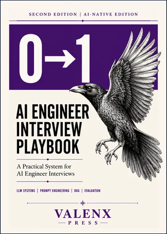

Practiced one out loud? Paste your answer into the free self-check and get a score in 30 seconds
- 01EntryWhat is RAG (retrieval-augmented generation)?What is RAG? Interview answer framework for retrieval-augmented generation: indexing, retrieval, re-ranking, grounded generation, plus common mistakes.
- 02EntryExplain the transformer architectureHow to explain the transformer architecture in an AI engineer interview: blocks, self-attention, residuals, decoder-only models and RoPE, with follow-ups.
- 03MidWhat is the KV cache and why does it matter for inference?KV cache interview answer: why keys and values are cached during decoding, how to estimate its memory, and how GQA, quantization and paging shrink it.

The Playbook · 2026 editionThe 0→1 AI Engineer Interview Playbook
The 0 to 1 AI Engineer Interview Playbook covers the answer frameworks, system-design walkthroughs and an 8-week plan.
- PublisherValenx Press
- FormatDigital download on Gumroad
- Price$19.99
Get the playbook 40% off with code EARLYBF until Nov 3, 11:59 PM PT- 04MidWhy do LLMs hallucinate, and how do you reduce it?Why do LLMs hallucinate? Interview answer on the cause, how to reduce it with grounding, citations and constraints, and how to measure faithfulness.
- 05SeniorWhat is prompt injection and how do you defend against it?Prompt injection interview answer: direct vs indirect injection, why prompts alone cannot stop it, and the layered defenses interviewers expect to hear.
- 06MidExplain LoRA and QLoRALoRA and QLoRA explained for AI engineer interviews: low-rank adapters, 4-bit base models, which layers to adapt and the hyperparameters that matter most.
- 07MidRAG vs fine-tuning: when should you use each?RAG vs fine-tuning interview answer: when to prompt, when to add retrieval, when to fine-tune a model, and why strong answers often combine the two.
- 08MidHow do you evaluate an LLM?How to evaluate an LLM application in an interview: eval sets, LLM-as-judge, offline vs online evaluation and regression testing, with common mistakes.
- 09SeniorHow do you evaluate a RAG system?How to evaluate a RAG system: retrieval metrics, faithfulness and citation checks, golden sets, calibrated LLM judges, and how to debug bad answers.
- 10EntryWhat is an AI agent, and how is it different from a chain?What is an AI agent? Interview answer on agents vs chains and workflows, the ReAct loop, and how to make and evaluate agents reliably in production.
- 11MidWhat is the difference between pre-training, instruction tuning and RLHF?Pre-training vs instruction tuning vs RLHF and DPO: what each LLM training stage adds, how much data it uses, and how to explain it in an interview.
- 12SeniorWhat are LLM scaling laws and how do they change decisions?LLM scaling laws explained for interviews: power-law loss, compute-optimal training, about 20 tokens per parameter, and why teams overtrain smaller models.
- 13EntryWhat is tokenization in LLMs and why does it matter?Tokenization in LLMs for interviews: BPE and subword tokens, why cost and context are counted in tokens, language differences and odd failure modes.
- 14EntryWhat is a context window and how does it affect system design?Context window interview answer: what counts toward it, why bigger windows still need retrieval, token budgets per section, and cost and latency trade-offs.
- 15EntryWhat do temperature and top-p do in an LLM?Temperature vs top-p for interviews: how each changes sampling, sensible settings for extraction, code and creative tasks, and why temperature 0 still varies.
- 16MidWhat is LLM quantization and why does it matter for deployment?LLM quantization for interviews: 8-bit and 4-bit weights, memory and throughput gains, GPTQ and AWQ, and why you must re-run task evals after quantizing.
- 17SeniorWhat is Mixture of Experts (MoE) and what are its trade-offs?Mixture of Experts explained for AI engineer interviews: routers, top-k experts, total vs active parameters, and the memory and serving trade-offs.
- 18MidHow do reasoning models differ from standard chat models?Reasoning models vs chat models for interviews: RL-trained chains of thought, inference-time compute, when they win, and how to route and budget them.
- 19EntryWhat is the difference between an embedding model and a generative model?Embedding model vs generative model for interviews: vectors vs tokens, what each is used for, relative cost, and how they work together in RAG systems.
- 20MidWhat is chain-of-thought prompting and when does it help?Chain-of-thought prompting for interviews: how step-by-step reasoning helps multi-step tasks, its cost, faithfulness limits and how reasoning models change it.
- 21MidHow do you get reliable structured JSON output from an LLM?Reliable JSON output from LLMs: schema modes and constrained decoding, validation with Pydantic, repair retries, and schema design tips for interviews.
- 22MidWhat is function calling (tool calling) in LLMs?Function calling explained for AI engineer interviews: tool schemas, the call and result loop, writing good tool descriptions and validating arguments safely.
- 23MidHow do you choose a chunking strategy for RAG?Chunking strategy for RAG interviews: structure-aware splitting, chunk size and overlap trade-offs, small-to-parent retrieval, and measuring recall.
- 24MidWhat is hybrid search and when should you use it?Hybrid search for RAG interviews: combining BM25 keyword search with vector search, reciprocal rank fusion, and when exact terms make it the right default.
- 25MidHow does re-ranking work in RAG and why use it?Re-ranking in RAG for interviews: retrieve wide then re-score with a cross-encoder, why it beats embeddings alone, and how to size candidates and latency.
- 26SeniorWhat is the lost in the middle problem in LLMs?Lost in the middle explained: why LLMs use facts at the start and end of long contexts more reliably, and the retrieval and ordering fixes interviewers expect.
- 27MidHow do you choose an embedding model?How to choose an embedding model for RAG or search: benchmark on your own query pairs, weigh language, domain, length, dimension and cost, and version the index.
- 28SeniorHNSW vs IVF: how do vector indexes trade off recall, speed and memory?HNSW vs IVF vector indexes for interviews: graph vs cluster search, recall, latency and memory trade-offs, tuning parameters, and measuring recall@k.
- 29SeniorHow do you enforce access control in a RAG system?Access control in RAG for interviews: permission metadata on every chunk, filtering inside retrieval, ACL sync with source systems, and how to test it.
- 30SeniorHow do you debug poor RAG answer quality?How to debug poor RAG answers in an interview: trace ingestion, parsing, chunking, retrieval, ranking and generation, and fix the earliest failing stage.
- 31MidWhat is the ReAct pattern for LLM agents?ReAct pattern for LLM agents explained: the thought, action, observation loop, why grounding in tool results helps, and the stop and budget controls it needs.
- 32MidWhat is the Model Context Protocol (MCP)?Model Context Protocol (MCP) for interviews: clients, servers, tools, resources and prompts, what problem it solves, and the security issues to discuss.
- 33SeniorHow do you make AI agents reliable in production?Making AI agents reliable in production: narrow scope, validated tools, step and cost limits, human approval for risky actions, tracing and trajectory evals.
- 34MidHow do you handle memory in AI agents?Memory in AI agents for interviews: short-term context, summaries, long-term stores with retrieval, structured user facts, and privacy and staleness rules.
- 35SeniorSingle agent vs multi-agent systems: when is multi-agent worth it?Single agent vs multi-agent systems: why to start with one agent, when parallel or specialized sub-agents help, and the cost and debugging trade-offs.
- 36MidWorkflows vs agents: how do you decide?Workflows vs agents for AI engineer interviews: fixed code paths vs model-directed loops, decision criteria, hybrids, and why predictability usually wins.
- 37MidHow do you build a fine-tuning dataset?How to build a fine-tuning dataset: define the behavior, collect real inputs, write high-quality outputs, dedupe, balance, hold out an eval set and iterate.
- 38MidWhat is catastrophic forgetting and how do you limit it?Catastrophic forgetting in LLM fine-tuning: why narrow training erodes general skills, and limiting it with LoRA, data mixing, low learning rates and evals.
- 39MidWhat is model distillation and when would you use it?Model distillation for AI engineer interviews: training a small student on a large teacher's outputs, when it cuts cost and latency, and its licensing limits.
- 40SeniorWhat is DPO (Direct Preference Optimization)?DPO explained for AI engineer interviews: learning from chosen and rejected pairs without a reward model, the beta setting, data needs and comparison with PPO.
- 41SeniorHow do you make LLM-as-a-judge evaluation reliable?Making LLM-as-a-judge reliable: specific rubrics, pairwise comparisons with swapped order, bias checks, and calibrating the judge against human labels.
- 42SeniorHow do you A/B test an AI feature?How to A/B test an AI feature: offline evals first, a user-level primary metric, guardrail metrics, enough sample size, and handling noisy model outputs.
- 43MidWhat is benchmark contamination and why does it matter?Benchmark contamination explained: test data in training sets, why it inflates scores, how to detect it, and why private task evals matter for model choice.
- 44SeniorDesign an LLM customer-support assistant for a SaaS companySystem design interview answer for an LLM customer-support assistant: intake, RAG over help docs, account tools, escalation, guardrails, evals and metrics.
- 45SeniorHow would you design an LLM gateway for a company?LLM gateway system design: one API across providers, auth and quotas, routing and fallbacks, caching, logging with redaction, cost tracking and policy controls.
- 46MidHow do you design caching for LLM applications?Caching for LLM applications: exact-match response caches, provider prompt caching, semantic caching risks, cache keys, invalidation and permission scoping.
- 47MidHow do you reduce LLM inference cost?How to reduce LLM inference cost: measure first, route to smaller models, trim prompts, cache, batch offline work, quantize self-hosted models, and re-check quality.
- 48MidHow do you reduce LLM latency?How to reduce LLM latency: measure time to first token and tokens per second, stream, shorten prompts and outputs, use smaller models, cache and parallelize.
- 49SeniorWhat does red-teaming an LLM system involve?Red-teaming an LLM system: scoping harms, adversarial and injection testing, automated attack generation, severity triage, fixes and regression tests.
- 50MidWhat are LLM guardrails and where do they sit?LLM guardrails explained: input checks, retrieval and tool controls, output validation and action approval, plus latency, false positives and monitoring.
Practice tool: Check your interview answer with the free Answer Self-Check (score, missed concepts and tips).
See all 100 AI engineer interview questions with answers
The PlaybookWant the full method?
The 0 to 1 AI Engineer Interview Playbook covers the answer frameworks, system-design walkthroughs and an 8-week plan.
Get the playbook 40% off with code EARLYBF until Nov 3, 11:59 PM PT